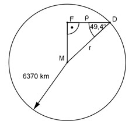

Aufgabe 117 Wie groß ist der Radius р des Breitenkreises, der zur geographischen Breite von 49,4° (Heidelberg) gehört, wenn der Erdradius = 6 370 km beträgt?

Im Dreieck MDF: ρ cos 49,4° = --- | * r r ρ = r * cos 49,4° = = 6 370 km * 0,6508 = 4 145,6 km